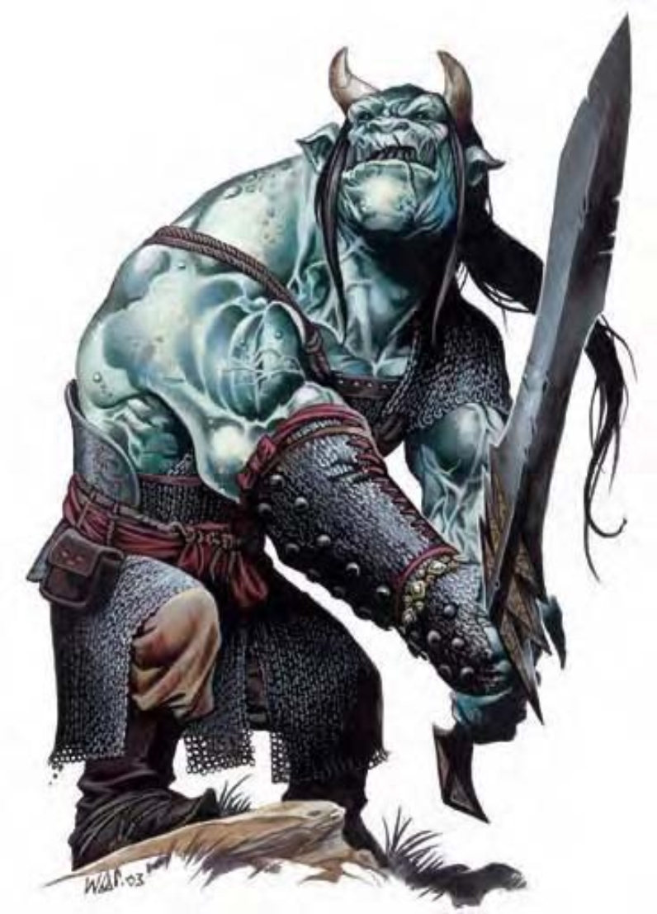

他们看起来就像高大又着了魔的人类。绿皮肤、黑毛发，前额还长了一对象牙角。显眼的眼白衬着黑色眼珠，尖牙利爪也同样漆黑。
食人魔巫师的智力比平凡的同类高，所以也更加危险，其天性不外乎贪婪及残酷。他们通常会带领有组织的掠夺队出发寻求奴隶、宝藏与食物。
食人魔巫师栖息于堡垒或地底巢穴中，通常为独居或与一小群追随者同住。食人魔巫师的地位是以财富来衡量。他们通常不会与同类合作，但会打赌看谁的掠夺队能在短时间内获得较多财富。
食人魔巫师约10英尺高，重约700磅。肤色由亮绿到亮蓝不等，发色则是黑色或暗褐色。食人魔巫师喜爱宽松舒适的衣着及轻装防具。
食人魔巫师通晓巨人语与通用语。
食人魔巫师性喜使用类法术能力，万不得已才会进行肉搏。当面对明显优势武力时，他们宁愿先施展「气化形体」撤退。但食人魔巫师非常会记仇，惹到他之后可千万得注意小心，他会随时找机会悄悄从你背后捅进来。
类法术能力：随意施展――「黑暗术」、「隐形」；每天1次――「魅惑人类」(DC=14)、「寒冰锥」(DC=18)、「气化形体」、「变形术」、「睡眠术」(DC=14)。施法者等级9。豁免检定DC的调整值与魅力调整值相同。
飞行 (特异)：食人魔巫师可随时停止或起飞，视为即时动作。当施展「气化形体」时，食人魔巫师可使用正常速度飞行，机动性灵活。
再生 (特异)：火焰与强酸依然能对食人魔巫师造成正常伤害。
食人魔巫师若失去手脚或部分身体，可以抓住失去的部分再接回身体，耗时1分钟。如果失去的是头或与维持生命有关的器官，则须在10分钟内接回，否则死亡。食人魔巫师死去的器官不会自行长回。
移形 (超自然)：食人魔巫师可化为任何小型、中型或大型人形生物或巨人形态。
食人魔巫师人物具有下列种族特性：
― +10力量、+6体质、+4智力、+4感知、+6魅力。
― 大型：防御等级-1减值、攻击检定-1减值、「躲藏」检定-4减值、擒抱检定+4加值、举物及负重能力上限为中型人物的两倍。
― 占用空间/可触距离：10英尺 / 10英尺。
― 食人魔巫师的基本行走速度为40英尺，飞行速度40英尺 (良好)。
― 黑暗视觉可达60英尺。
― 种族生命骰：食人魔巫师起始为5级巨人，生命骰5d8、基本攻击加值+3，强韧、反射与意志的基本豁免检定则分别是+4、+1及+1。
― 种族技能：食人魔巫师的巨人等级使他的技能点数成为8x (2+智力调整值，最小1)。他的本职技能为专注、聆听、法术辨识与侦察。
― 种族专长：食人魔巫师的巨人等级具有两个专长。
― +5天生防御加值。
― 特殊攻击 (见前文)：类法术能力。
― 特殊能力 (见前文)：再生5、法术抗力19。
― 母语：通用语、巨人语。额外语言：矮人语、地精语、炼狱语、兽人语。
― 适合职业：术士。
― 等级修正值：+7。
| 生命骰 | 5d8+15 (37HP) |
| 先攻 | +4 |
| 速度 | 40英尺 (8格)、飞行40英尺 (良好) |
| 防御等级 | 18 (-1体型、+5天生、+4炼甲衫)、接触9、措手不及18 |
| 基本攻击/擒抱 | +3 / +12 |
| 攻击 | 巨剑+7近战 (3d6+7/19-20)；或长弓+2远程 (2d6/x3) |
| 全力攻击 | 巨剑+7近战 (3d6+7/19-20)；或长弓+2远程 (2d6/x3) |
| 占据/触及 | 10英尺 / 10英尺 |
| 特殊攻击 | 类法术能力 |
| 特殊能力 | 黑暗视觉90英尺、昏暗视觉、再生5、法术抗力19 |
| 豁免 | 强韧+7、反射+1、意志+3 |
| 属性 | 力量21、敏捷10、体质17、智力14、感知14、魅力17 |
| 技能 | 专注+11、聆听+10、法术辨识+10、侦察+10 |
| 专长 | 寓守于攻、精通先攻 |
| 环境 | 寒冷带丘陵 |
| 组织 | 单独、成双或行列 (1-2，加上2-4个食人魔) |
| 宝藏 | 双倍标准 |
| 阵营 | 通常守序邪恶 |
| 进化 | 视人物职业而定 |
| 等级修正值 | +7 |